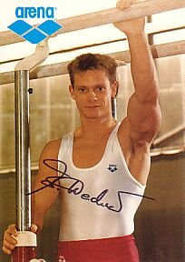

Andreas Wecker (GDR/GER)
1989 and 1992 European HB
Champion
1993 World AA Bronze Medalist
1995 World HB
Champion
1996 Olympic HB Champion

Medal Total
- Olympic Games: 1 Gold, 1
Silver, 3 Bronze
- World Championships: 1
Gold, 5 Silver, 2 Bronze
- World Cup: 1 Bronze
- European Championships: 2
Gold, 3 Silver
Wecker was born on January 2, 1970, in
Strassfurt, GDR. He trained at SC Dinamo Berlin under coach Lutz Landgraf.
Competition Results
- 1981
Children's and Youth Spartakiade: 1st AA, 1st FX, 1st PH, 1st R, 1st PB (11-year-olds)
- 1983
Children's and Youth Spartakiade: 1st AA, 1st R (13-year-olds)
1984
- Jr. Friendship Tournament (Druzhba): 2nd
Team, 19th AA, 5th FX
-
- 1988
- Belgian Gym Masters: 1st AA, 1st FX, 1st R, 1st HB, 2nd
PH, 3rd PB
- Gander Memorial: 4th AA
- GDR Championships: 7th AA
- Jr. European Championships: 4th AA, 1st HB, 3rd R, 3rd V
- Moscow News: 13th AA, 4th R
- Olympic Games: 3rd Team, 8th HB
-
- 1989
- DTV Cup: 1st AA
- European Championships: 7th AA, 1st HB, 2nd PH,
2nd PB, 8th R
- Lyss International: 1st AA, 1st PH, 1st R, 1st HB, 2nd PB
- World Championships: 4th AA, 2nd PH,
2nd R, 3rd PB, 6th HB
-
- 1990
- Canadian Air Cup: 3rd AA
- Cottbus International: 3rd AA, 1st R
- DTB Cup: 5th AA, 2nd R, 3rd FX, 3rd PH
- GDR-SUI Dual Meet: 1st AA
- GER-ITA-ROM Tri-Meet: 3rd AA
- GER-USSR-HUN Tri-Meet: 1st AA
- GER-USSR-USA Tri-Meet: 6th AA
- World Cup: 6th AA, 3rd PH, 4th R, 5th FX,
6th PB
-
- 1991
- American Cup: 5th AA
- DTB Cup: 3rd AA
- GER Championships: 1st AA
- GER-SUI Dual Meet: 1st AA
- GER-USSR-CHN Tri-Meet: 1st AA
- World Championships: 9th AA, 2nd R,
4th PH, 5th FX
-
- 1992
- DTB Cup: 3rd AA, 1st PH, 1st R, 1st PB, 4th HB
- European Championships: 4th AA, 1st HB,
7th PB, 8th FX
- GER-HUN Dual Meet: 1st AA
- GER-SUI-ROM Tri-Meet: 1st AA
- Olympic Games: 4th AA, 2nd HB, 3rd PH, 3rd R,
7th FX, 7th PB
-
- 1993
- American Cup: 3rd AA
- Cottbus International: 2nd AA, 1st PH, 1st R,
- DTB Cup: 2nd R, 4th PH, 7th HB, 7th FX
- French International: 1st R, 1st HB, 6th PB
- World Championships: 3rd AA, 2nd PH,
2nd R
-
- 1994
- DTB Cup: 1st R, 5th PH, 5th PB, 8th FX
- European Championships: 2nd R, 7th PB
- Reese's International Cup: 1st AA
- Swiss Cup: 2nd R, 6th PH
- World Championships (Brisbane): 5th R
- World Championships (Dortmund): 5th Team
-
- 1995
- Cottbus International: 1st R
- DTB Cup: 1st HB, 7th R
- World Championships: 10th AA, 1st HB, 5th
R
-
- 1996
- Cottbus International: 1st HB, 2nd R, 6th PB, 8th PH
- DTB Cup: 1st R
- French International: 3rd R, 4th HB
- GER Championships: 10th AA, 1st PH, 1st HB, 2nd R, 7th FX
- Olympic Games: 7th Team, 13th AA, 1st HB, 5th R
- Swiss Cup: 2nd HB, 3rd PH
-
- 1997
- Messe Cup: 1st Team
-
- 1999
- GER Nationals: 1st AA
World Championships: 8th Team, 13th AA
2000
Olympic Games: 10th Team
- This page was created on April 19, 1997 and was last
updated on January 31, 2021.
© Gymn Forum